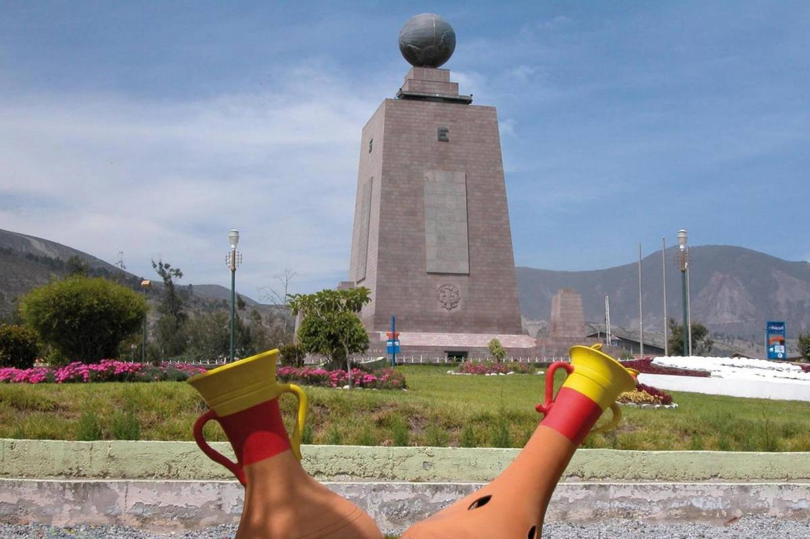

Ciudad Mitad del Mundo
La Ciudad Mitad del Mundo es un terreno propiedad de la prefectura de la provincia de Pichincha, Ecuador. Está situado en la parroquia de San Antonio del Distrito Metropolitano de Quito, al norte de la ciudad de Quito. La principal atracción del lugar es el monumento a la Mitad del Mundo, el cual tiene como finalidad el resaltar la ubicación exacta de la línea Ecuatorial o Ecuador, del cual el país toma su nombre, y destacar también la misión geodésica franco-española del siglo XVIII que ubicó el sitio aproximado por el cual pasa la línea equinoccial.1 También se encuentra el Museo Etnográfico Mitad del Mundo, un museo sobre la etnografía indígena de Ecuador. Una pequeña ciudad que rodea el monumento actúa como centro turístico, ofreciendo una réplica de una ciudad colonial española llamada "Ciudad Mitad del Mundo".
Deja Tu comentario
Perfil del Autor

Técnico en Marketing Digital. Dedicada por completo al Email Marketing , estrategias, campañas, diseños, creación de newsletter, copywriting creativo. Rodney Erickson es profesional del marketing de contenidos en HubSpot, una solución de inbound marketing y ventas que ayuda a las empresas a atraer visitantes, convertirlos en oportunidades de venta y finalmente en clientes. Anteriormente, Rodney trabajó como mánager de marketing en una startup de software de tecnología. Se graduó con honores en la Universidad de Columbia con una doble titulación en administración y redacción creativa